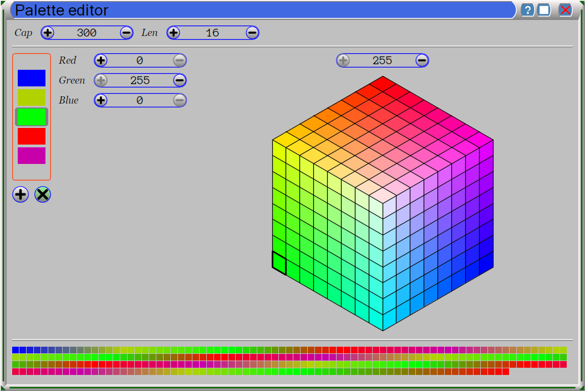

Mandelbrot scope (MScope.exe) is a software to display the Mandelbrot Set. The Mandelbrot Set is a famous mathematical fractal set, it has been discovered by Benoit B. Mandelbrot. The Mandelbrot Set itself cannot be calculated, because it requires infinite number of precise iteration per point. But we can calculate and paint the outer of it up to some level. The rest of the painted area is black and contains inside the true Mandelbrot Set, but we don't know which part. The more deeper we calculate, the more closer we are coming to the true border. You can select the depth in the Options menu. You can also adjust the color palette to paint the outer part.
To move the picture drag it by the mouse. To zoom/unzoom the picture use the mouse wheel. To return to the top view use the key Home.
The menu Options contains three submenus: Global, Application, Colors. The first submenu opens the dialog to edit preferences, shared by all applications. The second submenu opens the dialog to edit preferences, specific to the application. The submenu Colors opens the dialog, used to change the color palette and the depth of the calculation.
There are several configuration options on this dialog.
The spinor Cap controls the calculation depth.
The spinor Len determines the number of colors between pivot colors. The full color palette is built upon the pivot color list. Between two consecutive pivot colors a number of intermediate colors are inserted, using progressive blending of edge colors. The pivot list is cycled, when needed, except the first pivot color, which is usually Blue.
The full color palette is shown on the bottom part of the dialog.
The list of pivot colors is presented in the middle left part of the dialog. You can insert a new element or delete an existing element from the list using buttons or keys Insert and Delete. You can also change the selected color using RGB spinors or the color cube.
To run this software you will need a quit fast PC with GPU (or another OpenCL accelerator). Operating system Windows 10 is required, but you may try earlier versions (not guaranteed). To perform calculation an OpenCL provider is required. It is installed automatically with modern GPU drivers.
Copyright (c) 2017 Sergey Strukov. All rights reserved.
This software is distributed under the commercial license, see the License.txt for details.